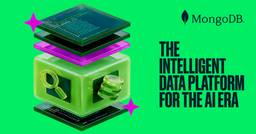

MongoDB Blog
https://www.mongodb.com/blog
MongoDB's blog includes technical tutorials, MongoDB best practices, customer stories, and industry news related to the leading non-relational database.
フィード
Building the Agentic Ecosystem: Partner Updates from MongoDB.local NYC
MongoDB Blog
Building AI applications has never been easier. Making them reliable in production remains the real challenge.
4日前
AI Demand is Constant, Unpredictable, and Extreme. MongoDB is Built for It.
MongoDB Blog
When a huge surge in demand meets limited resources, an awful experience usually isn’t far behind. Fans feel it when trying to compete for concert tickets with bots and scalpers. Diners feel it when they try to get a reservation at a trendy restaurant that’s fully booked for months. Websites and applications feel it when they go viral and get an accidental DDoS from a “Reddit Hug of Death.”
4日前
Everything Announced at MongoDB.local NYC 2026
MongoDB Blog
MongoDB.local NYC 2026 is officially a wrap, and what an event it was!
4日前
How Atlas Agent Engine Powers MongoDB’s Internal AI Strategy
MongoDB Blog
I've spent more than 25 years in technology, which means I'm rarely surprised by new tech—I usually see it up close before the public does. As an IT leader, I never evaluate a new capability in isolation; it's always weighed against real enterprise use cases, and against the risks that come with them. These days, I tell people that being a CIO in the age of AI means holding two jobs at once: the engineer reinforcing the dam, and the operator who has to open the floodgates anyway.
4日前
Context Engineering Has a Retrieval Issue: Introducing rerank-3 and Native Reranking
MongoDB Blog
Every team building AI agents discovers one fundamental truth: without the right information, an agent cannot reliably answer a question or take the correct action.
4日前
Your Database Just Became Your AI Control Point
MongoDB Blog
This is a guest blog post, written by Devin Pratt, Research Director at IDC.
5日前

The Intelligent Data Platform for the AI Era
MongoDB Blog
Some of you may have noticed a different, and perhaps familiar, name at the top of this post.
5日前

Same Query, Same Score: Consistent Ranking with StableTfl in Atlas Search
MongoDB Blog
Suppose you run paginated search in your application, or a RAG pipeline where the top ten retrieved documents feed a model. One of your users searches for a recipe collection for "chocolate cake." Page one ends with "Flourless Chocolate Cake." They click next, and the first result on page two is "Flourless Chocolate Cake" again. Between the two requests, nothing about the query changed; only the requested page did. An Atlas Search customer running paginated search brought us this exact problem.
9日前
Resilient Edge AI: Keeping Connected Vehicles Smart Offline
MongoDB Blog
A warning light appears on the dashboard while a driver is navigating a tunnel, a remote area, or an underground garage. The driver asks the vehicle what is wrong and what to do next. In that critical moment, getting a helpful answer shouldn't depend on whether the car has cell service.
10日前
From 2D Drawings to 3D Models: Designing an AI Reconstruction Pipeline on MongoDB
MongoDB Blog
Plenty of buildings exist only on paper. Small and mid-size building manufacturers still quote from 2D shop drawings, renovation firms inherit decades-old blueprints with no digital model, and archives everywhere hold plans for structures that were built long before BIM. Whenever one of these businesses needs a 3D model, to quote a job, visualize a change for a client, or plan a renovation, someone rebuilds the geometry by hand in a CAD tool. When the client asks to move a window or widen a wall
11日前
Supporting a DPDPA-Compliant Ecosystem in India with MongoDB
MongoDB Blog
Disclaimer: This post is for informational purposes only and does not constitute legal advice. Organizations should work with qualified legal counsel to interpret the DPDPA and determine how its requirements apply to their specific circumstances.
11日前
Data Sovereignty by Design: Five Practical Evaluation Lenses for IT Leaders
MongoDB Blog
For IT leaders evaluating sensitive or regulated workloads, data sovereignty can be explored through architecture and governance questions rather than treated as a single legal status. From a legal and policy perspective, the term should be treated as a market expression, not as a universally defined legal standard, certification, or conclusion about compliance. Data sovereignty refers to questions organizations may have about where data resides, who can access it, how it moves, and whether an o
12日前
How Real-Time Rewards Drive 2.5x Higher Customer Spend
MongoDB Blog
Imagine finishing a purchase, checking your loyalty balance moments later, and finding it unchanged. No confirmation, no reward, no sense that the transaction even registered. For millions of shoppers across the world's largest loyalty programs, this isn't hypothetical; it's the norm. Some balances take up to 72 hours to post. Others can take upwards of 10 business days after checkout. These delays aren't edge cases. They represent how most retail loyalty platforms operate today, revealing a wid
18日前
From Curiosity to Impact: Inside the MongoDB Intern Experience
MongoDB Blog
What does it look like to intern at MongoDB? The answer depends on the team, the project, and the people you meet along the way.
19日前
Stop Rubber-Stamping AI: A Contestable AI Framework for Regulated Industries
MongoDB Blog
Most AI deployed in regulated industries is neither explainable nor contestable. In those systems, AI may return a recommendation or a confidence score with no way for you to contest the results. This creates a barrier to deploying AI in regulated industries such as healthcare and manufacturing because the people responsible for outcomes have no meaningful way to participate in the decision.
20日前
Analyze MongoDB Atlas Data in OpenAI ChatGPT Work
MongoDB Blog
MongoDB Atlas is now a connected data source in OpenAI's Data Plugin, powered by the MongoDB Atlas Managed MCP Server. Analysts and business teams can point the Data agent in ChatGPT Work at the data in their Atlas clusters and ask what changed in the moment, why it changed, and what to look at next, then turn the answer into a report or real-time dashboard without leaving the conversation.
24日前
Benchmark Shows MongoDB Atlas Manages Thousands of Payments Per Second with Zero Data Loss
MongoDB Blog
As instant payment rails replace legacy batch systems worldwide, banks need public proof that modern data architectures can scale without compromising resilience. We recently put the Icon Payments Framework (IPF), trusted by Tier 1 banks including Citi, NatWest, and BNP Paribas, through a series of extreme load and failure tests on MongoDB Atlas.
25日前
Build a Fraud Review Agent with MongoDB Atlas and Claude Managed Agents
MongoDB Blog
Claude Managed Agents lets you run Anthropic's Claude as a fully hosted agent, without standing up your own inference or orchestration infrastructure. Pairing Claude Managed Agents with MongoDB Atlas gives your agents fast, secure access to operational and vector data right where it lives, so you can ship agentic workflows without gluing together separate retrieval and hosting layers.
25日前
MongoDB Enterprise Advanced for AI-Ready Operational Insights in Manufacturing
MongoDB Blog
Asset downtime and unplanned maintenance continue to impact manufacturing operations. According to Siemens, every unproductive hour in the automotive sector now costs $2.3 million[1]. The cost impact extends beyond immediate throughput loss, as a single equipment failure can also trigger contractual penalties and force costly expedited logistics. Most manufacturers have invested in condition monitoring and basic failure prediction, but predictive maintenance is not one single step, but a series
1ヶ月前
MongoDB VFS for LangChain Deep Agents: A Searchable Filesystem for Agents
MongoDB Blog
Modern AI agents are no longer expected to answer a question alone. They're expected to complete real work: plan a multi-step task, inspect source material, produce intermediate artifacts, and hand off pieces of the problem to other agents, compressing work that used to take days into hours. That shift raises the bar on what an agent needs underneath it. An agent can only plan and execute at that speed if it can reliably navigate, search, read, and update the filesystem it's working with along t
1ヶ月前
The Shared View That Makes Insurance AI Fast and Safe
MongoDB Blog
When a carrier can reduce a routine claims review from eight hours to eight minutes using AI, the era of "wait and see" has officially ended. Why? Agentic AI, technology that doesn't just answer questions but actively executes tasks, is transforming and speeding up claims processing, underwriting, and customer service. For insurance leaders, the question is no longer whether to adopt these autonomous agents; it’s how to deploy them without turning their existing data silos into operational liabi
1ヶ月前
Europe Data Residency for Atlas Embedding and Reranking
MongoDB Blog
Today, MongoDB is announcing the public preview of data residency in Europe and the US for the Embedding and Reranking API Service, also known as ERAS, on MongoDB Atlas. It’s a critical priority to make industry-leading Voyage AI models available wherever our customers operate, while supporting them in meeting their regulatory requirements. The introduction of geography-specific data residency builds on the strong foundation of MongoDB Atlas’s enterprise-grade data privacy, security, and complia
1ヶ月前
Beyond the Cloud: Building an Offline-First Mobile Wallet with MongoDB Atlas and ObjectBox
MongoDB Blog
The global transition toward a digital-first economy has a critical blind spot: the assumption of continuous, high-speed internet. From subterranean transit systems to rural geographies with spotty coverage, network dependency leaves users stranded and halts commerce.
1ヶ月前
Introducing Atlas App Connections: Secure, One-Click Access for AI Tools
MongoDB Blog
For builders using AI coding tools, speed is everything. Integrations that require generating a credential, filing an access request, or waiting on a custom build can stop momentum (and productivity) in its tracks.
1ヶ月前
MongoDB Atlas Joins Google Cloud Foundation Fabric (FAST): Secure Private Data Infrastructure in Minutes
MongoDB Blog
Transitioning from on-premises infrastructure to the cloud can be challenging. Many organizations lack a clear understanding of cloud fundamentals, and establishing a foundational environment is often complex and time-consuming. For every enterprise in particular, security is a critical priority and must be robustly implemented from the outset. Additionally, for new teams building applications, the initial setup presents significant difficulties, as they may not have clear guidance on the precis
1ヶ月前
Agent Observability: Monitoring Decisions, Not Requests
MongoDB Blog
Observability is the practice of making a system’s internal behavior legible from the outside—capturing enough signal that an engineer can reconstruct what happened and why. For a web service, that signal is the request: a status code, a latency number, a stack trace when something throws. For an agent, the unit of behavior is a decision: the choice it makes between one call and the next. The agent reads context, chooses an action, calls a tool or a model, observes the result, and chooses again.
1ヶ月前
How Indian Organizations in Regulated Industries Are Scaling with MongoDB
MongoDB Blog
Scaling while ensuring regulatory compliance is a major challenge that many Indian organizations today face, particularly when operating in industries like financial services, retail, education, and aviation.
1ヶ月前
How We Used AI to Bring MongoDB to DynamoDB
MongoDB Blog
Amazon has a history of favoring customer choice, and ExtendDB is another signal of that: an open source, pluggable adapter built specifically so DynamoDB workloads can run in more environments. At MongoDB, we also believe that everything starts with serving the customer well, so we work backwards from there. This is why we built a MongoDB storage backend for ExtendDB, AWS's open source DynamoDB-compatible adapter, which is ready for use today.
1ヶ月前
The Merchant Identity Gap: The Hidden Payment Data Problem
MongoDB Blog
The transaction is there. The merchant is not.
1ヶ月前
Building E-commerce AI Agents on MongoDB with CrewAI
MongoDB Blog
AI-powered shopping agents are becoming a real differentiator for e-commerce teams. A 2026 Stord report on AI in e-commerce revealed a 34% year-over-year increase in the number of consumers who reported using generative AI for online shopping. The trend is even more pronounced among younger consumers: 37% of Gen Z and 29% of Millennials actively use AI to shop online. After seeing how the agentic commerce journey actually works, it's not hard to understand why.
1ヶ月前
Leading Indian Organizations Are Driving India’s AI Future With MongoDB
MongoDB Blog
Millions of Indians now use AI on a daily basis. It’s been said before, but the technology’s possibilities are incredible, whether you’re using AI to build an app with just a few sentences, or whether a virtual assistant is not only answering your questions but actually anticipating your needs.
2ヶ月前
Introducing a More Connected, Flexible Path to MongoDB Certifications
MongoDB Blog
Learning something new feels better when you can see your progress.
2ヶ月前
Agent Memory Inside the Harness
MongoDB Blog
Four posts on this blog have already covered what agent memory is: the memory hierarchy[1], why multi-agent systems need memory engineering[2], how to build a memory-augmented agent[3], and how to give one long-term memory with LangGraph[4]. This post takes the layer beneath them. It is about what memory becomes once it has to run in production—compacted alongside tool schemas and reasoning traces when the context window overflows, versioned and governed like any other production artifact, fed f
2ヶ月前
The Hidden Security Gap in Smart Grid Telemetry (And How to Fix It)
MongoDB Blog
Smart grids are getting smarter. Millions of connected meters, batteries, and electric vehicle chargers now talk back to the systems that run the global grid, and that two-way flow is exactly what makes demand response, distributed energy resources (DER), and real-time balancing possible. It's also what makes this interconnected grid a bigger target than ever before.
2ヶ月前
How Palo Alto Networks Built a Zero-Downtime, Multi-Region SASE Health Portal with MongoDB Atlas
MongoDB Blog
This guest blog post is from Kunal Kannav, Principal Site Reliability Engineer for Palo Alto Networks—a global cybersecurity leader delivering best-of-breed platforms, world-class threat intelligence and expert services to deliver what’s next in cybersecurity.
2ヶ月前
Close the Database Blind Spot with MongoDB Atlas Observability
MongoDB Blog
Modern applications generate more telemetry than ever before, yet one of the most critical systems in production often remains disconnected from the rest of the observability stack: the database. When incidents occur, operators shouldn’t have to jump between dashboards, stitch together signals from disconnected systems, or rely on brittle integrations just to understand what’s happening. Database telemetry should be part of the same operational picture as application and infrastructure telemetry
2ヶ月前
Closing the Gap Between Agentic Promise and Impact with Industry Leading Retrieval
MongoDB Blog
A recent McKinsey report* noted that AI agents and robots “could generate about $2.9 trillion in US economic value per year,” while another study from WRITER** quantified the speed at which organizations have moved toward agents: 97% of C-suite executives surveyed indicate their companies have deployed AI agents, and 75% expect agents to become members of the C-suite in the next five years.
2ヶ月前
MongoDB for the Agentic Era: Built for Developers and AI Agents
MongoDB Blog
How developers work has dramatically changed. Anthropic's 2026 Agentic Coding Trends Report* found that developers now use AI in roughly 60% of their engineering work. Coding agents are no longer just executing decisions; they're helping make them. If you’re building software today, it has to work for both humans and the agents working alongside them.
2ヶ月前
Agent Orchestration and Tool Use: The Machinery Underneath
MongoDB Blog
The MongoDB blog has made the case for bounded autonomy1, and cataloged the design patterns that produce safe agents2. Earlier entries in this series introduced the harness, the layer of code and configuration around the model that determines whether an agent works in production. A recent formal definition of the agent harness3 names four elements: an agent loop, a tool interface, context management, and control mechanisms. The control mechanisms are where the concerns in this post live. This e
2ヶ月前
Enhancing Energy Management with the Power of MongoDB and Agentic AI
MongoDB Blog
As we race toward 2050, the U.S. electric grid faces a massive capacity surge, with transformer needs projected to increase by 160%–260%, according to the U.S. Department of Energy. For utility operators, grid modernization is no longer a long-term goal; it’s an urgent operational necessity.
2ヶ月前
Context Engineering for Agentic Applications on AWS Bedrock AgentCore and MongoDB Atlas
MongoDB Blog
Most agentic demos look impressive in a notebook. A prompt comes in, an agent reasons, tools fire, and a result comes back that feels almost magical.
2ヶ月前
Powering Open Banking Consent with MongoDB and Agentic AI
MongoDB Blog
Open Banking and Open Finance (OB&OF) only scale if customers can grant and renew consent in a way that feels safe, transparent, and effortless—yet today consent friction causes more than half of users to abandon otherwise high-value digital experiences. This blog shows how financial institutions can use MongoDB, agentic AI, MongoDB Atlas Vector Search, and the MongoDB MCP Server to turn fragmented consent flows into a single, auditable journey that reduces drop-off and unlocks open finance grow
2ヶ月前
Catch MongoDB Anti-Patterns on Every PR with Claude Routines
MongoDB Blog
This tutorial shows you how to set up a Claude Routine to review Pull Requests (PRs) against MongoDB's official Agent Skills, and posts a review evaluating the changes against MongoDB best practices.
2ヶ月前
Financial Crime Mitigation with MongoDB / Part IV: Agentic AI for Case Management
MongoDB Blog
Welcome back to the last part of our series on Building a Financial Crime Mitigation Platform. We have shown how MongoDB ideally supports the technical capabilities of modern digital financial operations as a unified data platform. In case you missed it, be sure to check out the series overview.
2ヶ月前
Atlas at 10 Years: Celebrating the Customers Behind the Platform
MongoDB Blog
Since I joined MongoDB in March, it’s become clear that people build on MongoDB because they trust it to power what matters most.
2ヶ月前
Fraud Hides in Patterns. Vectors See Them.
MongoDB Blog
Fraud has always been a behavioral problem. The signals that distinguish a genuine payment from a fraudulent one are rarely visible in a single field. Instead, they live in the pattern of how an account holder behaves over time: the merchants they frequent, the rhythm of their spending, and the sequence of events before and after each payment. Banks have known this for decades. The question has always been how to put it into practice.
2ヶ月前
How Greater China Organizations Power AI And Compliance At Scale
MongoDB Blog
Organizations across Greater China are heavily investing in data-driven technologies to deliver innovative digital services and experiences. According to Morgan Stanley Research, AI investments in China alone could deliver a 52% return on invested capital by 2030*.
2ヶ月前
From Intent to What-If: AI Agents for Network Operations and Planning
MongoDB Blog
It’s a busy Wednesday evening in Munich. A new Alpenmarkt retail store has just opened its doors at Marienplatz, with POS terminals coming online and customers beginning to flow through. Deep in the network infrastructure, however, a subtle queue-scheduling collision is quietly building pressure. In less than a minute, this issue will push POS latency beyond the agreed SLA threshold, potentially disrupting transactions and customer experience. At the same moment, thousands of miles away, a netwo
2ヶ月前
Circular Commerce in Retail: Building the Data Foundation for AI-Driven Recommerce
MongoDB Blog
Retail is entering a new phase where products are no longer sold once and forgotten. Instead, retailers are increasingly seeking to participate in the second, or even third, transaction of a product's lifecycle through trade-in, refurbishment, resale, or recycling. This shift is being driven by the rapid growth of recommerce platforms that are capturing significant portions of the secondary market. To remain competitive, retailers are increasingly investing in their own circular commerce capabil
2ヶ月前